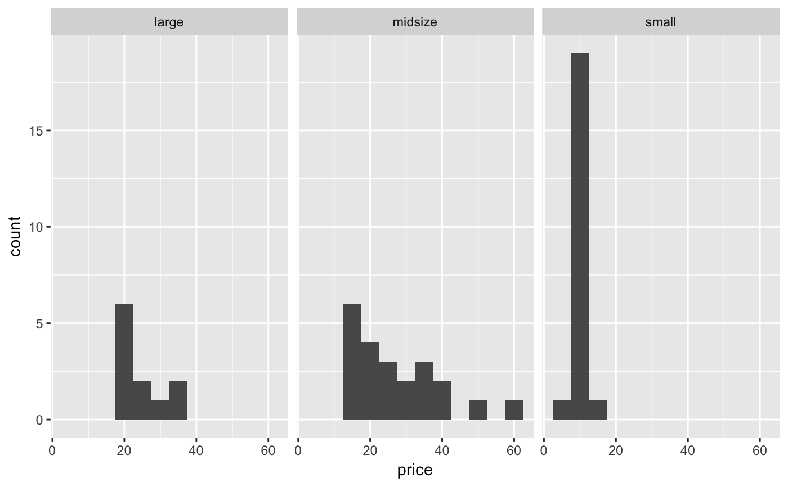
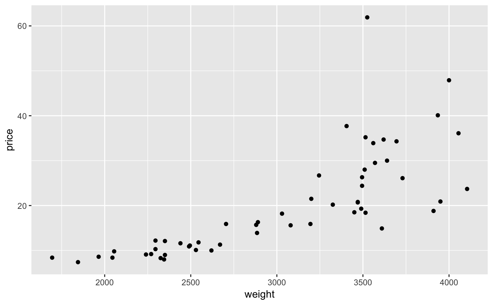
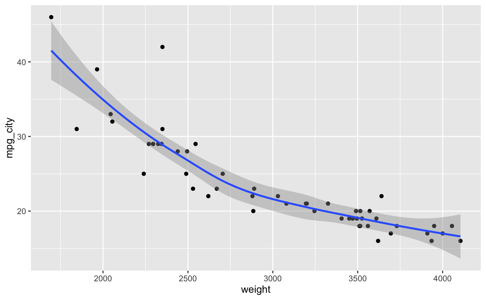

cars.RdA tibble with 54 rows and 6 columns. This data is a subset of the
Cars93 data set from the MASS package.
cars
A tibble with 54 observations on the following 6 variables.
The vehicle type with levels large, midsize,
and small.
Vehicle price (USD).
Vehicle mileage in city (miles per gallon).
Vehicle drive train with levels 4WD, front,
and rear.
The vehicle passenger capacity.
Vehicle weight (lbs).
Lock, R. H. (1993) 1993 New Car Data. Journal of Statistics Education 1(1).
These cars represent a random sample for 1993 models that were in both
Consumer Reports and PACE Buying Guide. Only vehicles of type
small, midsize, and large were include.
Further description can be found in Lock (1993). Use the URL http://www.amstat.org/publications/jse/v1n1/datasets.lock.html.
library(ggplot2) # Vehicle price by type ggplot(cars, aes(x = price)) + geom_histogram(binwidth = 5) + facet_wrap(~type)#>